Full Name: ABDULRAHMAN MAZEN HASSAN
Student ID: 202503876
This lab covers CPU scheduling concepts including long-term, medium-term, and short-term schedulers. I will implement First-Come-First-Serve (FCFS) and Round-Robin scheduling algorithms in C#, then visualize the results using Gantt charts. The lab requires Visual Studio Code with C# and Project (available only on campus CS/CSE machines). All code must be properly commented, inputs validated, and meaningful variable names used. For each code we represent a flowchart and the related Gantt charts.
This lab covers CPU scheduling concepts including long-term, medium-term, and short-term schedulers. I implemented First-Come-First-Serve (FCFS) scheduling using the task data from Table 1 (Tasks A–G with their Entry Time, Duration, and Priority/Rank). The code filters tasks where Rank > 5, sorts them by arrival time, then simulates FCFS execution tracking start and finish times. Gantt chart visualisation is included as required. All inputs are validated and variable names are meaningful.
Show the Code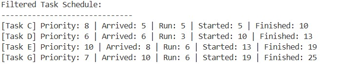
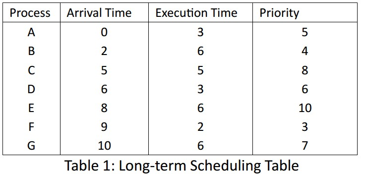
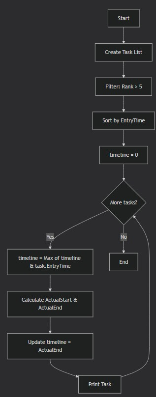
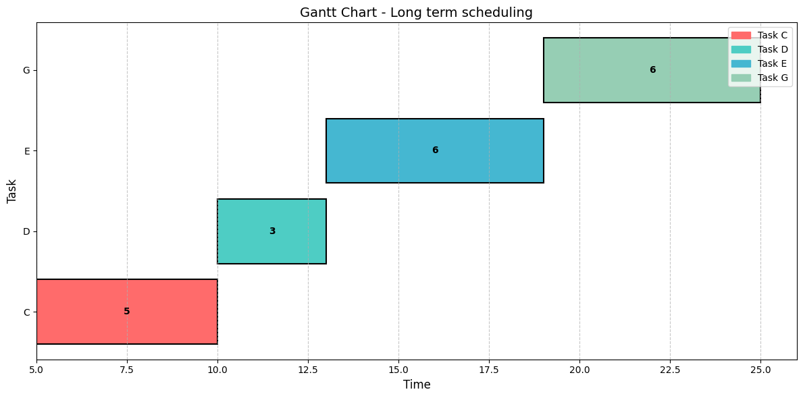
I implemented FCFS scheduling using Table 2 in C#. The program sorts processes by arrival time, then calculates for each process: Finish Time (Start + Execution), Turnaround Time (Finish - Arrival), and Normalized Turnaround Time (Turnaround / Execution). The Gantt chart visually represents the order of execution showing when each process runs on the CPU.
Show the Code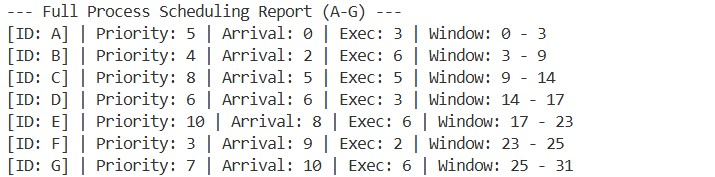
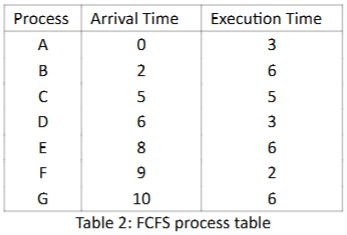
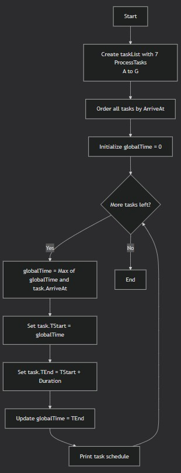
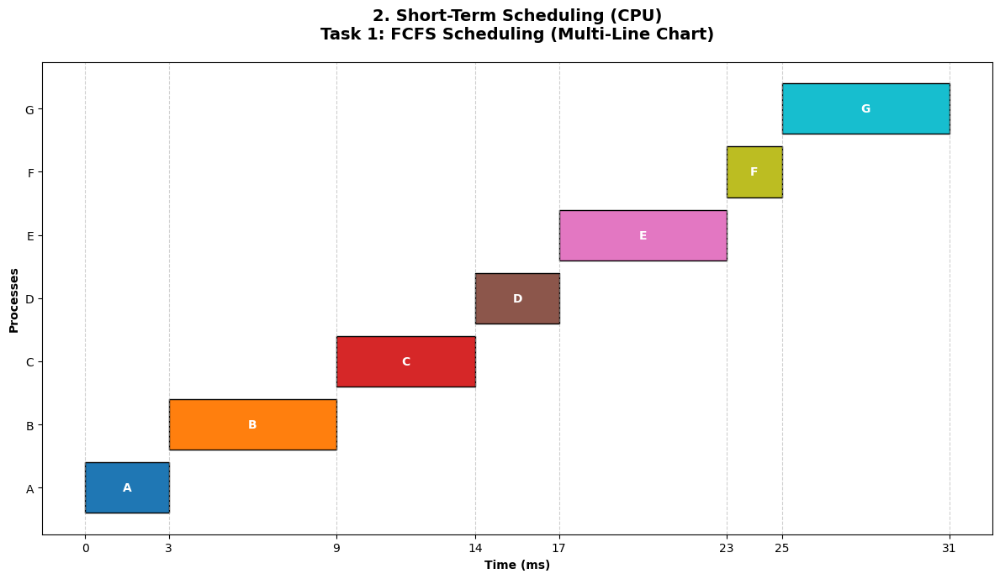
I implemented Round-Robin scheduling with time slices TQ = 1, 3, 4, and 6, calculated finish, turnaround, and normalized turnaround times for each process, and plotted Gantt charts. Smaller time slices increased context switching and turnaround time; larger slices behaved like FCFS.
Show the Code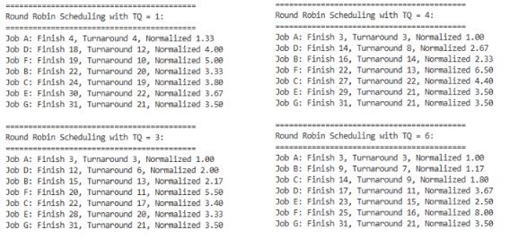
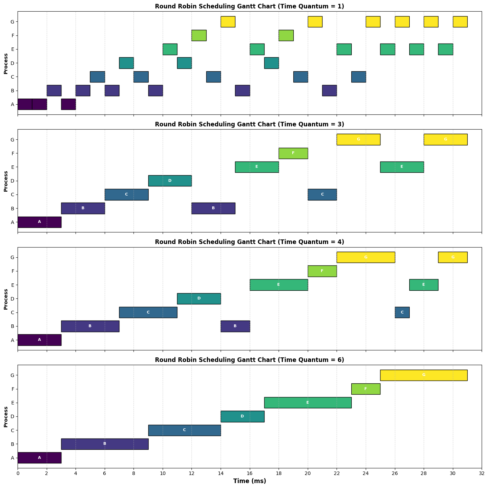
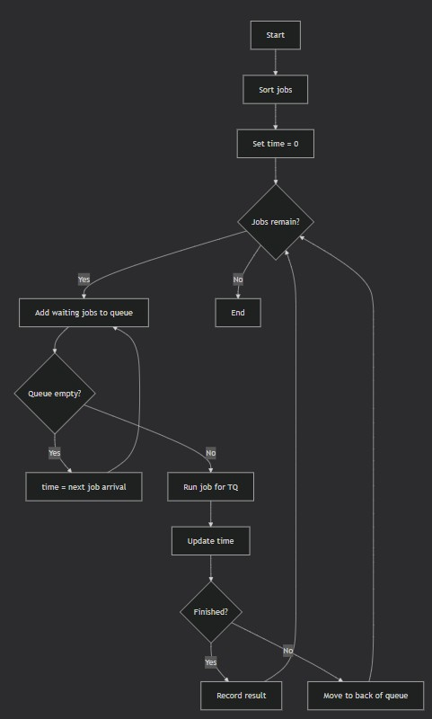
I extended the Round-Robin simulation to include priority-based scheduling using data from Table 2, with time quantums TQ = 1 and 6. Priority determined execution order, while the time quantum controlled how long each process ran before context switching. The Gantt charts show that smaller time slices (TQ = 1) caused frequent context switches, increasing overhead, while larger slices (TQ = 6) reduced switching but allowed lower-priority processes to block higher-priority ones longer. Priority scheduling improved response time for high-priority tasks but increased waiting time for low-priority ones.
Show the Code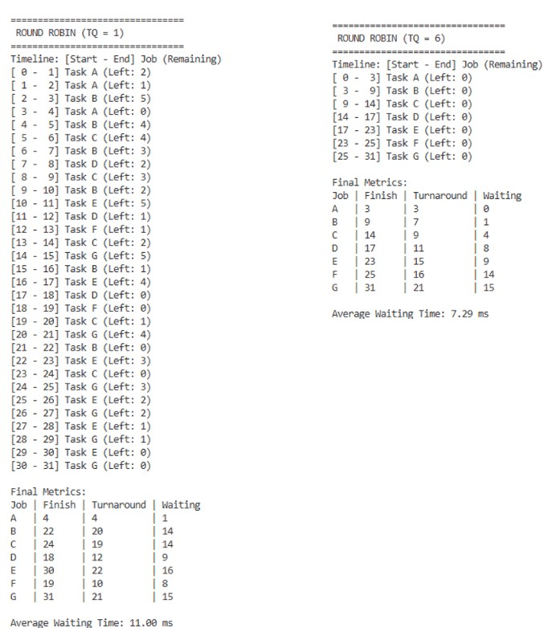
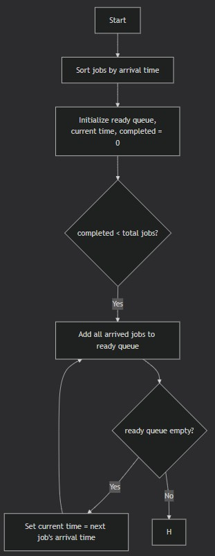
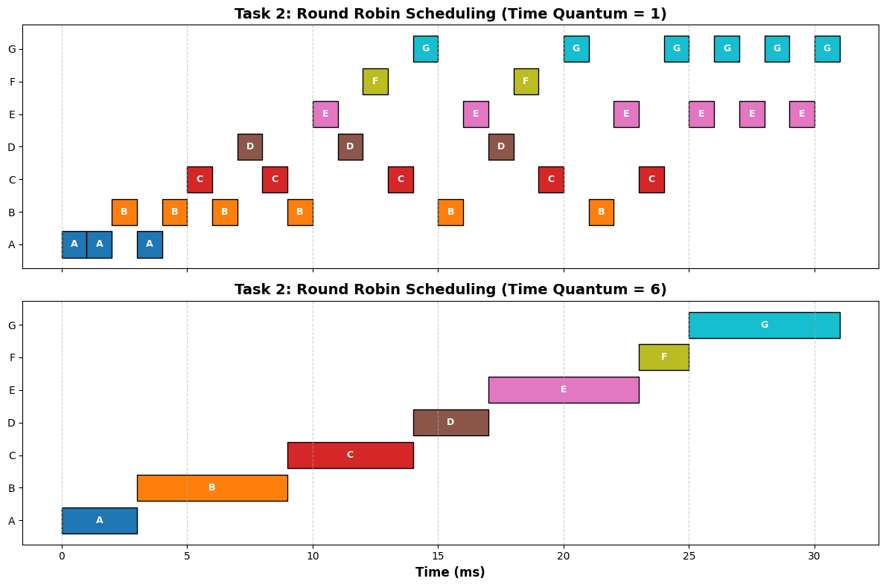